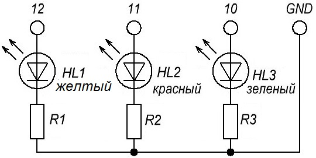
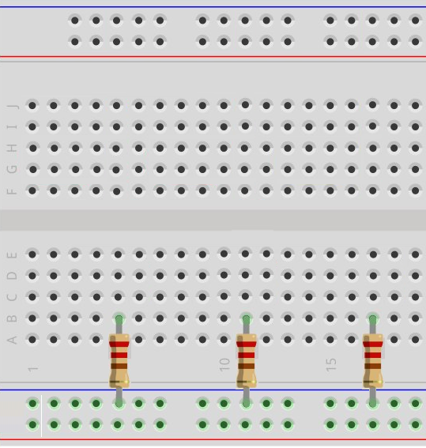
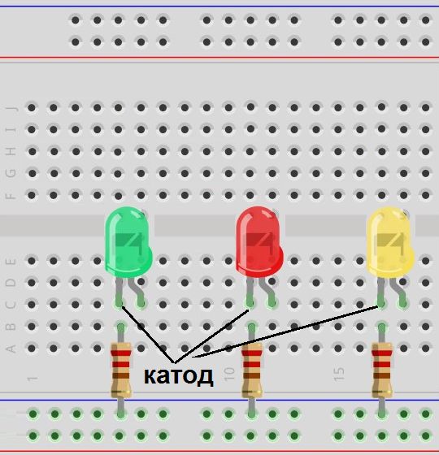
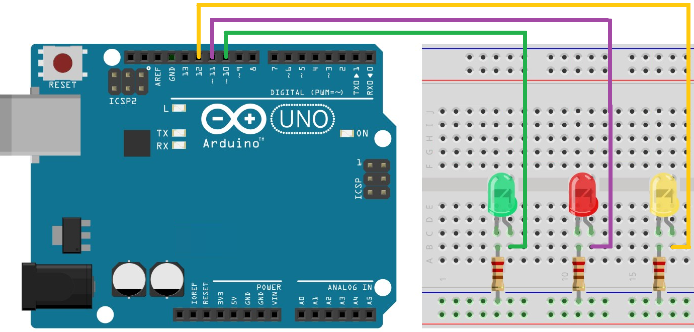
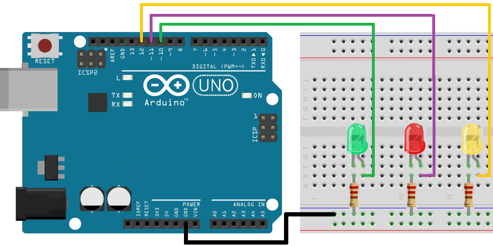

Мигалка из трех светодиодов на Arduino UNO
Компоненты:
- Микроконтроллер Arduino UNO.
- Макетная плата.
- Светодиоды - 3 шт.
- Резистор сопротивлением 200-300 Ом - 3 шт..
- USB-кабель.
- Соединительные провода.
Порядок работы светодиодов: сначала по очереди загораются все светодиоды, а потом они все одновременно гаснут.

Сборка схемы
- Устанавливаем на макетную плату резисторы (рис. 2).

Рис. 2 - Установка резисторов - Устанавливаем на макетную плату светодиоды: катоды вставляем в одну шину с резистором, аноды - на другую (рис. 3).

Рис. 3 - Установка светодиодов - Соединяем светодиоды с платой Arduino: анод зеленого светодиода соединяем с выводом 10, анод красного светодиода - с выводом 11, анод желтого светодиода - с выводом 12 (рис. 4).

Рис. 4 - Подключение светодиодов к плате Arduino - Соединяем вывод GND платы Arduino с шиной "—" макетной платы (рис. 5).

Рис. 5 - Соединение GND платы Arduino с макетной платой
Скетч
int greenPin = 10; // зеленый светодиод на выводе 10 int redPin = 11; // красный светодиод на выводе 11 int yellowPin = 12; // желтый светодиод на выводе 12 int pause_time1=1000; // пауза после включением светодиода int pause_time2=500; // пауза перед включением светодиодов void setup() { pinMode(redPin, OUTPUT); // вывод 11 в режиме вывода pinMode(greenPin, OUTPUT); // вывод 10 в режиме вывода pinMode(yellowPin, OUTPUT); // вывод 12 в режиме вывода } void loop() { digitalWrite(greenPin, HIGH); // включаем зеленый светодиод delay(pause_time1); digitalWrite(redPin, HIGH); // включаем красный светодиод delay(pause_time1); digitalWrite(yellowPin, HIGH);// включаем синий светодиод delay(pause_time1); // выключаем все светодиоды одновременно digitalWrite(redPin, LOW); digitalWrite(greenPin, LOW); digitalWrite(yellowPin, LOW); delay(pause_time2); }
Загрузите скетч в Arduino и убедитесь, что все работает правильно.
Источники
alexanderklimov.ru - Работаем с множеством светодиодов
oarduino.ru - Мигалка на Ардуино: как сделать скетч по схеме из светодиода